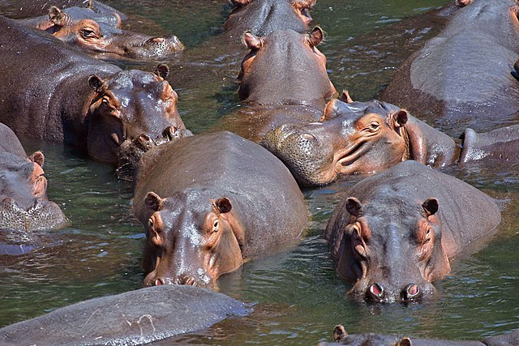
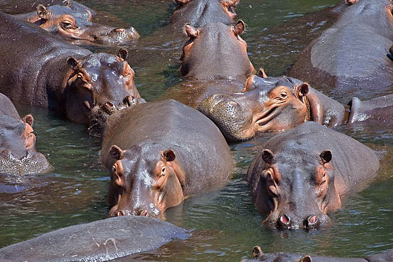

Hipopótamo (do grego ἱπποπόταμος, composto de ιππος, "cavalo", e ποταμού, "rio") o nome genérico de um mamífero ungulado de grande porte pertencente à família Hippopotamidae. É um artiodátilo mamífero, próprio da África, de pele muito grossa e nua, patas e cauda curtas, cabeça muito grande e truncada num focinho largo e arredondado.
Comportamento
Hipopótamos passam a maior parte de seus dias dentro da água ou da lama com os outros membros de seu grupo. A água serve para manter a temperatura do corpo baixa e para não deixar sua pele ficar seca. A maioria dos hipopótamos vive lutando com outros hipopótamos e sua reprodução ocorre na água.
Eles podem ser muito desengonçados fora da água, mas dentro dela são como bailarinos, muito delicados.
Hipopótamos adultos normalmente saem da água para respirar a cada 3-5 minutos. Hipopótamos adultos se movem em velocidades de até 8 km por hora enquanto estão na água. Os jovens têm de respirar a cada dois ou três minutos. O processo de respiração é automático, e até mesmo dormindo são capazes de subir e respirar sem acordar. Um hipopótamo fecha suas narinas quando submerge.
Descrição
Os hipopótamos estão entre os maiores animais terrestres não extintos; apenas os elefantes e os rinocerontes podem pesar mais. O peso médio para um macho adulto varia entre 1,5 a 1,8 tonelada. As fêmeas são menores, com peso que varia entre 1,3 e 1,5 tonelada. Os machos mais velhos podem ficar ainda maiores, podendo chegar, pelo menos, às 3,2 toneladas.[2] O hipopótamo mais pesado de que se tem registro pesava aproximadamente 4,5 toneladas.[3]
Estes animais vivem geralmente próximo de rios, onde passam grande parte do seu tempo imersos, pois eles tem uma pele sensível a luz solar. Os hipopótamos são herbívoros e alimentam-se durante a noite da vegetação existente nas margens dos rios que habitam, mas há alguns indícios de canibalismo de machos adultos com filhotes.
Eles têm uma mordida extremamente forte em torno de 810 kg, mais do que o dobro da mordida de um leão.
O único predador natural dos hipopótamos são os leões que os caçam em bandos.
Galeria
 

Referências
Hippopotamidae, https://pt.wikipedia.org/wiki/Hippopotamidae